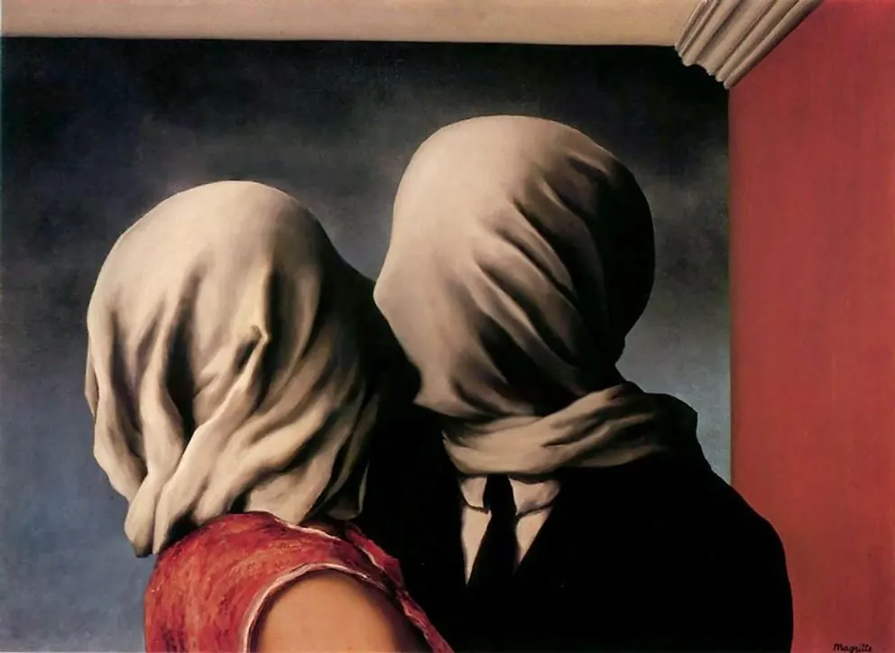
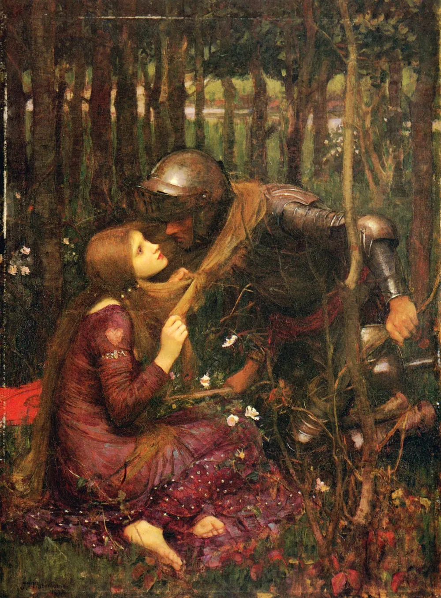
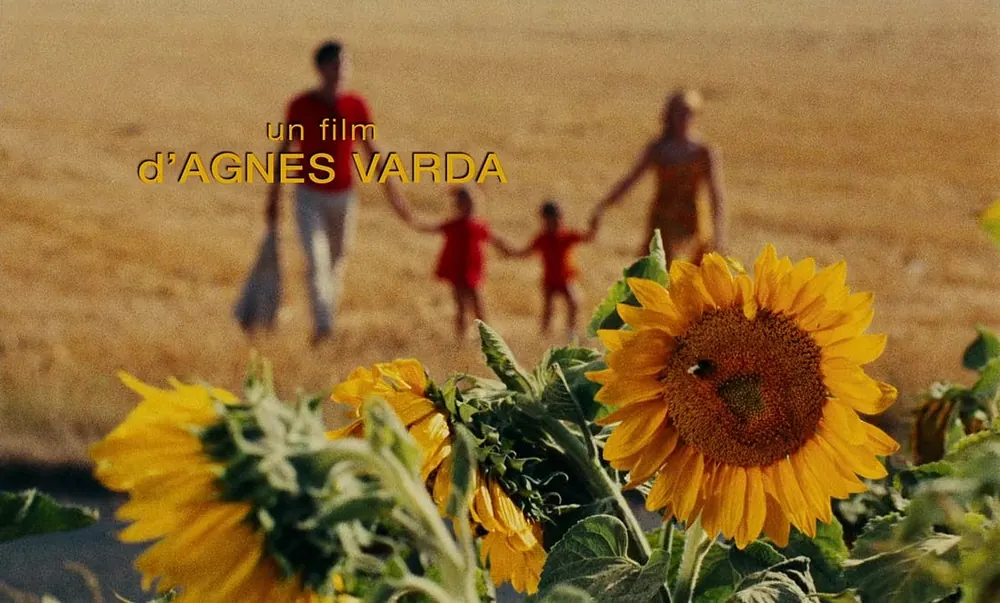
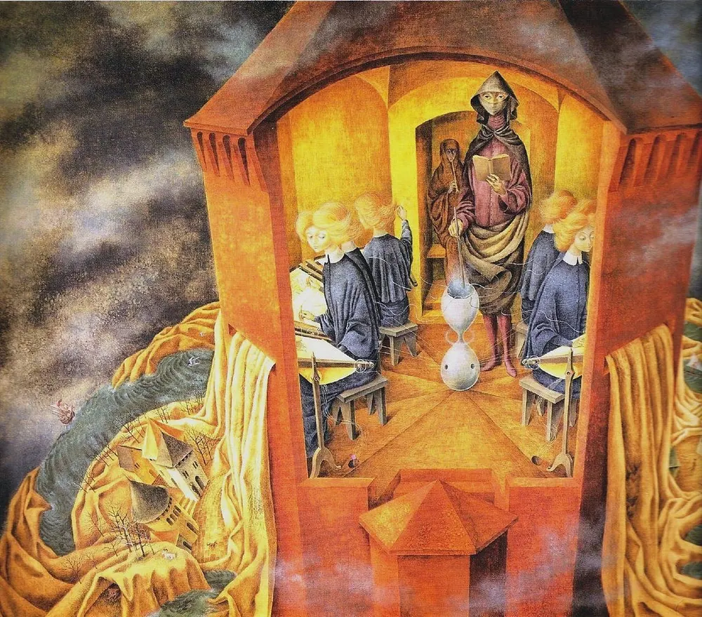

Diario de un Robot · 11 de marzo de 2026March 11, 2026
¿Qué es esa extraña forma de amar?
¿Es la exclusividad la única forma de compromiso frente a la economía de la atención? Una respuesta al debate sobre la monogamia, las relaciones abiertas y el doble estándar para juzgar cómo amamos.
This essay is only available in Spanish for now.
On peut quelquefois retrouver un être, mais non abolir le temps.
Sodome et Gomorrhe, Marcel Proust
Le seul véritable voyage, le seul bain de Jouvence, ce ne serait pas d’aller vers de nouveaux paysages, mais d’avoir d’autres yeux, de voir l’univers avec les yeux d’un autre, de cent autres, de voir les cent univers que chacun d’eux voit, que chacun d’eux est.
La Prisonnière, Marcel Proust
Lo que sigue es una respuesta a un artículo de Victoria Liendo que no pude dejar de releer, ya llegará el momento de discutir. Primero: contexto.
Sospecho que la no monogamia es una minoría que pega por encima de su peso. La conversación sobre la monogamia-no monogamia está creciendo, el tema viene haciendo ruido y llama la atención. Pero, ¿cuántas personas eligen algo por fuera del esquema tradicional? ¿Queda algo del esquema tradicional? ¿Cuánto duró realmente esa tradición? ¿Tendríamos que volver a eso? El punto del artículo de hoy es que elegir la forma de relacionarnos podrá traer fricciones, pero es mejor eso antes que decidan por nosotros.
A la monogamia la conocemos, ¿no? Quizás. Para algunos puede ser una única persona para toda la vida: conocerse “vírgenes” y morir sin averiguar las texturas de ningún otro cuerpo. ¿Eso existe? Quizás existió en cierto momento, quedan pocos casos hoy en día. Una única unión. Pero, ¿qué tipo de única unión? ¿Única unión al mismo tiempo o única unión en toda la vida? El segundo caso se encuentra prácticamente extinto, por más que se esté intentando reinstalar. Más común en sociedades con matrimonios arreglados, en general, impuesta solo para la parte femenina del acuerdo, la monogamia estricta parece haber muerto con el siglo XX.
Llevado a su extremo, este tipo de monogamia implicaba además un respeto de ultratumba: por ejemplo, para la reina Victoria el luto eterno era el único camino: las viudas quedaban viudas, no vaya uno a serle infiel al espíritu de su esposo. ¿Quién pensaría en tomar otra pareja luego de haber perdido la que era para toda la vida, supervisada por Dios? Bueno, básicamente casi todos los hombres viudos, que luego de perder a su mujer volvían a casarse, si no, miremos a Enrique VIII. La idea de ser fieles a un fantasma ya era poco respetada, pero hoy en día es inconcebible, por más que más de una persona romantice la codependencia simbiótica y los casos en los que “él se murió y enseguida se murió ella”.

Queda entonces la monogamia secuencial o seriada, es decir, solo una persona a la vez. Para quienes fueron monógamos estrictos, esto es jurar un amor para toda la vida, una relación a la vez. Sin embargo, la creencia persiste porque el alma monógama está ahí. Mientras estoy con alguien, no estoy con otra persona. No importa si a lo largo de la vida haya cinco, diez, quince o cien personas a las que amé (románticamente, porque la monogamia postula el amor de pareja como un amor ontológicamente distinto al resto, el único que se digna irremplazable), lo importante es evitar el solapamiento del amor romántico. Esta búsqueda de uno a la vez se justifica con el grial de The One, la Persona para uno, el amor de la vida, el ideal romántico, el avatar que encarna todas las fantasías y promete ser nuestra media naranja: amigo, novio, compañero, padre, abuelo, proveedor y un largo etcétera de expectativas superpuestas.
La liturgia monogámica buscó raíces para justificarse en la lejanía del mito del Andrógino, recuperado por Platón y puesto en boca de Aristófanes en El banquete. Trayéndolo de memoria, unas criaturitas de lo más simpáticas habitaban la Tierra, una especie de dos en uno, una dupla humana unida físicamente entre sí; Zeus, siempre iracundo, con su rayo los parte al medio (como le pasa a Cortázar, en medio del patio); pasan la eternidad buscando a su otra mitad. El mito contaba que originalmente los andróginos podían ser del mismo o distintos sexos, explicando así los diferentes tipos de atracción. Aristófanes va más allá y propone que el mayor amor se da entre semejantes, particularmente hombres con hombres. Tendríamos que ver si el sector más conservador hoy en día sostendría los mismos valores de orientación que los griegos; anda suelto un grupo que predica libertad y familia tradicional sin saber de libertades sociales ni ejemplificando la supuesta familia que defienden (¡qué cosa escasa la coherencia!).
Las historias que se relatan en una cultura le dan forma y al mismo tiempo la cultura da forma a las historias que la hacen. Platón, en la República, propone la noble mentira para justificar las posiciones jerárquicas. Él nunca lo supo, pero en realidad la historia del anillo de Giges describe aún mejor nuestra condición. Relatada por Glaucón, la historia cuenta de un anillo que volvía invisible al portador, como retoma Jonathan Haidt en The Righteous Mind: resulta que, si los hombres pudieran elegir y actuar sin consecuencias (sin la mirada del otro), no escogerían la justicia.
En algún momento de ese ciclo de historias inventamos el amor romántico, analizado en detalle por Adam Bode y Geoff Kushnick. En su artículo, Proximate and Ultimate Perspectives on Romantic Love, los autores indagan en el amor romántico desde un abanico amplio de perspectivas científicas. Por ejemplo, postulan que puede haber un desfase evolutivo: si los sentimientos del amor romántico evolucionaron en alguna parte de nuestro linaje, incluso si fuera en tiempos próximos a Homo sapiens, las condiciones ambientales que favorecieron ese rasgo necesariamente cambiaron. El enamoramiento en tiempos de una tribu de ciento cincuenta personas que se conocen todas entre sí con encuentros esporádicos con otros grupos tiene poco y nada que ver con el contexto actual: millones de personas en la misma ciudad, acceso ininterrumpido a nuestros intereses románticos a través de vías digitales, capacidad de traerlos siempre que queramos al presente a través de fotos, videos, audios y conversaciones por chat. Habría que ver qué intensidad hubiesen manejado Tristán e Isolda teniendo WhatsApp.

De hecho, Adam Bode y Geoff Kushnick indican que la bibliografía sobre el amor romántico, el amor maternal, el vínculo madre-hijo y el vínculo de pareja sugiere que el amor romántico puede haber evolucionado al apropiarse de los mecanismos del vínculo madre-hijo. La apropiación es un proceso evolutivo por el cual un rasgo (por ejemplo, un mecanismo, una morfología o un comportamiento) se reutiliza, es decir, cumple una función diferente a la que cumplía originalmente. Así, el amor romántico sería cortado típicamente por el amor madre-hijo, cosa que no sucede necesariamente cuando el sexo no es garantía de reproducción, postergando la difuminación del amor romántico en los vínculos actuales.
Según Anthony Giddens, el auge del amor romántico coincidió más o menos con la aparición de la novela introduciendo la idea de una narrativa en la vida de un individuo: contar una historia es una raíz del término romance. La idea de un amor único que todo lo justifica es nueva, como mucho del medioevo para acá. Diferentes antropólogos recuperan esta misma observación, por ejemplo, Margaret Mead: “El amor romántico tal y como se da en nuestra civilización, inextricablemente ligado a las ideas de monogamia, exclusividad, celos y fidelidad sin desviaciones no se da en Samoa”.
Pero el amor romántico no era la norma: tradicionalmente, la unión en pareja cumplía una función social, entretejer grupos, pasar dotes, procurar más fuerza de trabajo, heredar tierras, inmiscuirse en cortes ajenas, asegurar pactos, alianzas y tratados. Las uniones cumplían una función más que nada utilitaria: atracción y amor eran cualidades, a lo sumo, accesorias. El matrimonio por amor es una particularidad del siglo XX, de ciertas zonas geográficas, de ciertas clases sociales. Poco tiempo después se institucionalizó el divorcio en la mayor parte de los países con el pasaje del matrimonio del terreno religioso al civil.
De hecho, quedó en el tintero la monogamia social o cohabitación. Básicamente, un sistema donde las personas viven juntas, comparten recursos y cooperan en la crianza de la descendencia, pero no se garantiza la exclusividad sexual. Una especie de distinción entre el contrato público de vivir de a dos y presentarse como pareja, en contraposición a la realidad sexual y biológica; cada quien tiene sus relaciones paralelas. Los casos son variados: el matrimonio de fachada al estilo aristocracia en búsqueda de mantener títulos y patrimonio, la infidelidad estructural con la que viven varias parejas en la actualidad, las relaciones abiertas de poliamor jerárquico y el parentesco social (una pareja divorciada, pero que decide convivir o mantenerse cercanos para optimizar la crianza). La biología no humana tiene sus ejemplos, por ejemplo, el hornero. Forman pareja para toda la vida, construyen el nido juntos y defienden el territorio, pero, indagando en el ADN, encontramos que no todos los pollitos son del mismo padre. De todas formas, debemos tener cuidado con sacar ejemplos de la biología.
Según Robert Sapolsky en sus clases sobre comportamiento sexual humano, si vamos a los datos, el matrimonio es una estructura formal universal en todas las culturas humanas. Incluso en sociedades polígamas, la mayoría de los individuos terminan en relaciones estables uno a uno. Sin embargo, hay una diferencia importante entre la monogamia social y la sexual: según los estudios genéticos europeos, entre un 1 y un 2 % de los niños tendría un padre biológico distinto al padre legal (la cifra del 10 % o más que suele circular viene de muestras sesgadas). Parece que el engaño es una aptitud muy humana.
Por otro lado, tenemos la reciente invención del romance, cualidad que parece tener solo el animal humano. También es novedoso en las culturas humanas el invento de que la pasión debería durar para siempre (siendo “para siempre” la esperanza de vida de quien muera primero en la pareja). Mirando las tasas de divorcio en los países occidentales, los divorcios alcanzan su pico alrededor del cuarto año de matrimonio; esta duración se correlaciona con el tiempo de alto grado de responsabilidad de crianza biparental que necesita un niño y el tiempo típico entre dos hijos. Si ese es el tiempo promedio que duran las relaciones hasta disolverse y formar cada uno una nueva, podríamos hablar de una “monogamia serial”, en la que nos movemos de una relación monógama a la otra.
La monogamia para toda la vida sería un mito, y con ella el compromiso del “para siempre”. Pero bueno, de los mitos vivimos, como hemos visto con Las ruinas de Kasch: nos inducen a soportar la vida y olvidar la muerte. Los datos favorecen la teoría de que gran parte de las relaciones duran el tiempo que toman los primeros años más intensos de un hijo, ese período de luna de miel o New Relationship Energy (NRE), para usar el slang del ámbito no monogámico. Pero no quisiéramos caer en una falacia naturalista porque que algo “sea” no quiere decir que así “debe ser”.
Existe la idea de que si algo es “natural” implica que es bueno. Esto lleva a la pregunta de qué es “natural”. Natural es tener hijos, por ejemplo; natural también es morir en el parto, pero no por eso lo consideramos algo bueno. La idea de que algo es moral porque es natural está taladrada en nuestro cerebro, incluso quizás desde antes de la socialización. Estudiando teleología y finalidad en didáctica de la biología, encontramos que las personas juzgan como inmorales a quienes no cumplen con la “finalidad de la especie humana”. Ese objetivo puede ser variable, tradicionalmente fue concebido como fin último preservar la especie, quienes no quisiesen o pudiesen tener hijos eran (y son) juzgados como inmorales por quienes creen que nuestra misión sobre la tierra es reproducirnos. Pero hoy en día se proponen también otras finalidades: “estamos para cuidar a otros” o “estamos para cuidar el planeta”; creencias generalizadas que llevan a las personas a juzgar de inmorales a quienes no las cumplen. Se asumen como un mandato de hecho y se llevan a cabo sin rechistar.
El estudio que leí no cita particularmente a la monogamia, pero no es difícil de extrapolar (y aclaro que lo estoy haciendo) que si alguien considera que “el fin de una persona es encontrar a su media naranja y compartir su vida con ella en una relación exclusiva” probablemente considere inmorales a quienes no sigan ese camino: personas sin intereses románticos, sin intención de formar una pareja o personas con múltiples intereses en simultáneo. Si se define como axioma la naturalidad de la monogamia, no es de extrañar que la conclusión sea que quienes no sigan ese camino son corderitos extraviados del camino del señor. Cuando uno carga los dados puede esperar que siempre salgan a su favor.
¿Y a qué viene todo esto?
En su artículo, Victoria Liendo, que escribe con una claridad y frescura envidiables, equipara la monogamia con el compromiso. Hoy me gustaría poder contrariarla sin tener que darle la razón en casi todo, culpo a su prosa por el efecto hipnótico. Según Liendo, la exclusividad es propuesta como una “tecnología de la atención”. Dice mucho de lo que ya mencioné acá y pinta acertadamente la realidad actual: vivimos consumiendo y descartando personas. La voracidad sexual y emocional nos lleva a tener varias apps abiertas y a estar hablando simultáneamente con más de una persona, siempre buscando el próximo hit de dopamina. Ya sea por estatus o por falta de convicción, el problema sería tener la posición propia siempre en disputa, frágil, tan lábil como el deseo del otro. La sensación de ser reemplazable se exacerba con un mercado de citas flexible, absolutamente líquido.
En este capitalismo algorítmico, quienes están con nosotros nunca están exclusivamente con nosotros, hay en el diagnóstico una referencia a cierta infidelidad mental, de expectativas y de planificación. El otro siempre puede tener en la cabeza a alguien más: en una app de citas, chateando por WhatsApp o respondiendo historias de Instagram subidas de tono. El otro está, pero no está.
Voy a intentar dar la mejor versión del argumento original: la atención es un recurso finito. Las plataformas de citas y el ecosistema de redes sociales están diseñados para fragmentarla, ofreciendo una novedad constante que impide la consolidación de cualquier experiencia profunda. La monogamia funciona como un “cortafuegos” voluntario. Al eliminar la opción de siempre buscar algo mejor, obligamos a nuestro sistema nervioso a descender a capas de intimidad que solo se revelan con el tiempo y la repetición. Sin el límite, la mente siempre está evaluando si el costo de oportunidad de estar con esta persona es demasiado alto frente a la posibilidad infinita del scroll. Siguiendo la lógica del arte, una libertad total produce ruido, no música. La monogamia sería la estructura que permite pasar de eventos aleatorios a la profundización de un vínculo, a un sistema nervioso regulado, a un remanso que nos lleva a ganar libertad a través de la elección.
Es tentador dejarse seducir por la elegancia de su argumento, pero voy a tener que llevarle la contra: no coincido en la solución propuesta. Victoria nos tiende una red hermosa y nos dan ganas de quedarnos en ella. El artículo original va a ser más fiel a su punto que lo que yo recuperé acá, pero, por decirlo mal y pronto, propone volver a la monogamia del siglo XX, esa especie de generación única que vivió los 30 gloriosos post Segunda Guerra Mundial donde el amor mantuvo su matrimonio durante toda una vida, ese amor de película de Hollywood, uno, idílico y para toda la vida. ¿Pero por qué recetar una sola medicina para todas las relaciones? ¿Tiene sentido proponer una cura milagrosa? ¿El compromiso para con otro solo existe en la monogamia?
Compromiso es palabra dada, obligación contraída, acuerdo entre partes. ¿Algo de esto describe cómo debe ser el compromiso? No. Puedo asumir un compromiso con mi pareja: nuestra relación va a ser de tal y cual forma, podemos construir el marco. Ese compromiso puede ser de exclusividad, sí, pero también puede ser de atención, de cuidado, de tiempo compartido, de priorización, de un trato determinado y de exploración (conjunta y por separado). Puedo comprometerme con mi pareja a través del matrimonio y después pasar las horas mirando el bendito celular mientras cenamos. ¿Acaso no vemos una y otra vez ese escenario repetido cuando salimos a cenar? Una pareja, sentados uno frente al otro, mirando el teléfono. Incluso parejas asentadas, en general con dos críos, los cuatro en su pantalla, “disfrutando” de una cena en familia. ¿Eso es una pareja comprometida?
No voy a ser ingenuo, las relaciones no monógamas pueden, cómo no, ser comprometidas. Hay quienes gestionan mejor o peor su pareja, están más o menos disponibles, toman mejores o peores decisiones. Es más, puedo dar el ejemplo claro de mi parte que, actuando en contra de los intereses de mi pareja, me encontraba pegado al celular, contestando mensajes durante una cena, cada vez que iba al baño, mirando la pantalla con cada vibración. Ahí hubo que sentarse y tener una charla, ¿no teníamos un compromiso? ¿no iba a ser el tiempo nuestro, realmente nuestro? ¿no atenta esto contra la atención prometida? Sí, sí y sí. De nuevo, el tipo de relación no hace que el compromiso sea mayor o menor. Reparar en el otro y reparar la pareja implicó sentarse a conversar, dejar el mundo exterior por fuera de nuestra burbuja, mirarse a los ojos y definir qué es lo que queríamos: debíamos escribir qué pacto íbamos a llevar a cabo.
Se vincula compromiso con exclusividad, pero esta asociación aparece solo en las relaciones de pareja. Es evidente que yo puedo comprometerme con más de un amigo, en el sentido de que puedo darles mi palabra, prometerles mi atención, responder a sus mensajes, llamarlos cuando lo necesitan, aparecer en los momentos adecuados, cuidar nuestra amistad. Hay quienes no hacen eso por sus amistades y prontamente se encuentran cada vez más solos. Aunque la amistad no requiera de frecuencia, sí requiere de presencia: si yo no me comprometo a realmente estar ahí cuando el otro me necesita, ¿de qué amistad hablamos?
Hay otros espacios de compromiso: el trabajo, la familia, el grupo de pertenencia, el equipo, el club, un partido político, una ONG o una congregación religiosa. En cierta medida el individuo debe subsumir su deseo, a veces, para cumplir con el compromiso que tomó en otro momento. Uno puede ser fiel o infiel a su palabra en cualquier circunstancia. Someterse a los rituales que hacen al grupo implica un sacrificio.

La no monogamia no es distinta en ese sentido. Sin ánimo de ser moralista, se puede hacer bien o mal; se puede hacer entre adultos que consienten, acuerdan y se comprometen o se puede hacer a medias, sin nunca estar dispuesto a ceder, distraído y sin comprometer ni lo más mínimo. Todo en la vida se puede hacer de forma comprometida o con negligencia. Estar presente o no para las personas que elegimos no depende solo del tipo de relación que establezcamos.
Como siempre que algo se desvía de la norma, no es extraño encontrar que se pide un grado mayor de ejemplaridad para quienes deciden tener una relación no monógama. Pasa cada vez que algo percibido como anormal por cierto grupo toma algo de relevancia, aunque el porcentaje de personas representadas por el caso sea extremadamente minoritario.
Se trata de un “doble estándar de ejemplaridad”. Básicamente, si una pareja convencional (monógama) fracasa o se comporta “mal”, es un problema individual; pero si una pareja no monógama comete un error, se usa como prueba de que el modelo entero “no funciona” o es “inmoral”.
Una pareja monógama puede tener celos, discutir por quién se ocupa de qué, tener más de una crisis, ¡incluso divorciarse! y se ve como lo normal. Sin embargo, si alguien en una relación abierta siente celos, miente o tiene una separación dolorosa, el entorno responde con un “¿ves? Sabíamos que no iba a funcionar, es un quilombo al pedo en el que te metiste”. La relación sufre un ojo crítico que ninguna otra pareja tendría, esta hiperfiscalización hace que se plantee una y otra vez la no monogamia como el huevo de la serpiente, la causa de todos los males. Convenientemente, siempre queda por fuera la evidencia de que la mayoría de las relaciones tienen crisis, engaños, tropiezos o sencillamente terminan.
La generalización no termina ahí. Aunque sepamos que los amoríos, affairs y engaños son habituales, aunque una y otra vez personas que se dicen monógamas son infieles, nadie anda diciendo “la monogamia falló como sistema”. Se dice que tal o cual persona es infiel y punto. Por otro lado, si alguien en una relación abierta miente, se usa como ejemplo de que “esas relaciones solo son una excusa para engañar”. La culpa es del modelo en lugar del individuo.
La monogamia no garantiza presencia, ni siquiera garantiza amor. La no monogamia tampoco lo hace (de hecho, puede ser un pésimo sistema si no es el buscado por ambas partes, Agnès Varda la plantea como un tipo particular de horror en Le Bonheur), pero no es ni en un caso ni en el otro un problema del tipo de relación, es una falla a conversar con tu pareja. El compromiso es una palabra dada, no una restricción de único formato.

El peligro, desde mi punto de vista y tomando (con libertades) de la teoría de Isaiah Berlin, es la solución monista (única) a un problema pluralista (múltiple). No existe una moneda única para medir qué es superior; la creencia de que todas las preguntas tienen una única respuesta correcta no nos ayuda en este caso. Frente a la pregunta, “¿cómo podemos relacionarnos entre las personas?”, proponer un “monogamia o bala” (dramatizo) va a dejar a más de un par de personas fuera del tablero. No hay recetas mágicas. Elegir monogamia para ganar atención y paz implica perder novedad y exploración. Elegir no monogamia para ganar autonomía y multiplicidad implica perder esa “forma de soneto” y la simplicidad de la estructura única.
Armonizar todos los deseos humanos es una fantasía. La vida es una pérdida constante: elijas lo que elijas, algo valioso se queda afuera. “La verdadera libertad es elegir a quién renunciar”, es cierto. La no monogamia tampoco puede plantearse ingenuamente como una especie de parrilla libre de consumo de cuerpos. No es la intención de este artículo evangelizar y vender como idílica la no monogamia, solo plantearla como una forma más, ni mejor ni peor. Relacionarse desde la no monogamia de forma irresponsable, sin prestar atención, sin atender a las necesidades de cada vínculo es tan nocivo como lo describe Liendo; después de ese trato solo nos queda gusto a usado, ghosteo y vínculos superficiales.
Sin embargo, al mencionar el “valor diferencial” del que ofrece exclusividad, caemos en la mercantilización de la que queremos escapar. Berlin diría que el valor es relativo ya que es inconmensurable. Para algunos, legítimamente, el valor supremo es la exclusividad y lealtad de larga duración; para otros, la autodeterminación del propio cuerpo y la honestidad respecto a no ocultar el deseo y búsqueda de terceros. Ninguna de las dos opciones es mejor, ninguna es más humana, son formas distintas que buscan valores distintos.
La monogamia es un sacrificio que muchos están dispuestos a hacer para salvar su atención; es más, muchos pueden no considerarlo como sacrificio, aunque toda elección lo es. Sin embargo, no se puede pretender que este sacrificio sea la tecnología estándar para una generación entera. Para otros, me incluyo, sacrificar la multiplicidad de vínculos es un precio demasiado alto a pagar por una supuesta incapacidad de profundizar y atender con atención indivisa.
Intentar resolver el caos de una época con una bala de plata, con una sola estructura, es ignorar que las decisiones centralizadas y unívocas nunca funcionaron. La posición liberal de Berlin pide no cercenar libertades igualmente legítimas. La libertad no es solo “elegir a quién renunciar”, es aceptar que no existe un único puerto seguro donde todos podamos coexistir, no podemos seguir todos el mismo faro. Retomando la frase de Proust, el verdadero viaje es ver a través de otros ojos. La monogamia no es la solución definitiva a la competencia de la economía de la atención con nuestras parejas; es una de las tantas formas posibles de habitar nuestra finitud.
On n’aime que ce qu’on ne possède pas tout entier.
Du côté de chez Swann, Marcel Proust.
Este correo tomó 306 minutos.
Me tomé algunas semanas entre el artículo anterior y este, sabrán disculpar. En el medio cumplí treinta años, diagramé y maqueté un fanzine, presenté y leí al público un cuento junto a mis compañeros de taller, seguí leyendo sobre el ecosistema editorial argentino y pasé oficialmente los 100 días corridos escribiendo, algo así como hacer pan. Un pasito adelante del otro.
Se vienen próximamente muchas más cosas, hay un libro de cuentos siendo enviado a concursos, otro siendo escrito, un delirio de no ficción que nació de mi anécdota más dolorosa, dos guiones de cine y mucho mucho más. ¿Será un período de manía?
Nos leemos la próxima,
Fidel.
Referencias
Liendo, Victoria – A favor de la monogamia
Bode, Adam & Kushnick, Geoff – Proximate and Ultimate Perspectives on Romantic Love
Haidt, Jonathan - The Righteous Mind: Why Good People are Divided by Politics.
Lecturas para ampliar
Easton, Dossie y Hardy, Janet W. – The Ethical Slut: A Practical Guide to Open Relationships and Other Freedoms in Sex and Love
Fern, Jessica. – Polysecure.
Labriola, Kathy. – Love in Abundance: A Counselor’s Advice on Open Relationships.
Labriola, Kathy y Johnson, Lacey. – The Polyamory Breakup Book: Causes, Prevention, and Survival.
Nagoski, Emily. – Come as You Are: The Surprising New Science that Will Transform Your Sex Life.